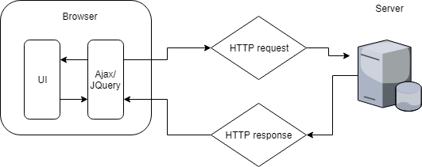

Este diagrama muestra como a traves del navegador se mandan los inputs a jquery o ajax, y eso luego lo manda al srevidor donde se procesa. Despues de procesarlo el serrvidor responde a jquery, quien digiere la respuesta y la muestra en el navegador
Kendo UI, Webix, JQwidgets, EasyUI entre otras